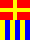

Тестовая страница
Проба шаблона отдельной страницы
Липовый заголовок
Содержание
Глава 1. Рыба-бред
Некоторый текст, призванный представлять собой статью. В общем-то, ничего особенного, просто набор букв русского алфавита, укомплектованных в слова. Просто так, для того, чтобы не было так, что ничего нету. То есть, такая последовательность символов (букв, цифр и знаков препинания), которая дает возможность оценить некоторый текст в составе некоторого дизайна. Такой текст абсолютно не должен нести никакой полезной смысловой нагрузки, поскольку никто читать его все равно не будет. Зато должны быть выполнены такие требования, которые позволят оценить исключительно внешний вид опуса. То есть, ни в коем случае нельзя, чтобы повторялось 1 – 2 слова, тупо скопированные и вставленные многократно. Нужно, чтобы слова были разные и существенно отличающиеся по длине. Нужны предложения, которые теоретически можно было бы разложить на подлежащее, сказуемое и прочие члены, буде таковые будут иметь место быть. Необходимо, чтобы казалось, будто статью действительно кто-то писал, старался, мучился над каждым словом, предложением, фразой. Размышлял над уместностью каждого оборота, подбирал метафоры, задумывался над гиперболами, старался использовать и другие художественные приемы.
Однако, все многообразие множества образов, весь творческий потенциал автора, весь его запал и порыв пропадет впустую, когда все, что от него требуется — это некоторая банальнейшая бредятина, по сути, не имеющая практически никакого смысла.
Но что же делать? Ведь иногда совершенно необходимы даже такие «произведения», например, при работе над шаблонами дизайна страницы, при отладке системы проверки правописания или расстановки переносов, при тренировке работы с издательскими системами, да мало ли где еще… Впрочем, может быть и мало где еще.
Глава вторая. Примеры.
Подзаголовок — строчные вставки
Сам по себе не нужен, но надо проверить, как работает. То есть, второй уровень заголовка уже сам по себе пример. Но можно вставить сюда для примера еще что-нибудь. Допустим, аббревиатуру, например, ЧПУ. Заодно добавим выделение тегом strong, выделение тегом emphasize, еще оба выделения сразу и внутристрочный <h1>блок кода</h1>. Еще необходима сноска1 в тексте. Использование HTML напрямую: пример. Использование спецсимволов (пример): « — © — »
Блочные вставки
Третий уровень — блоки кода
Это такой подзаголовок, который больше нужен для проверки стиля заголовков и формирования оглавления, оно же содержание. Заодно содержит примеры блоков кода.
Код, оформленный отступами:
Несколько строк с примером на HTML:
<h1><a>Заголовок-ссылка</a></h1>
<p>Абзац с примером
<span style="text-transform: uppercase;">слова</span>
в верхнем регистре
</p>
Kод, оформленный заборчиком, несколько строк:
protected AnimationTimer atAlgorithmTest = new AnimationTimer(){
@Override
public void handle(long now) {
animatedTestOfAlgorithm();
}
};
Код, оформленный заборчиком другого типа:
private void animNext(View v) {
Animation anim = AnimationUtils.loadAnimation(this, R.anim.next_step);
// TODO : anim.setDuration(durationMillis);
v.startAnimation(anim);
}
Kод, оформленный заборчиком, с нумерацией строк:
1 2 3 4 5 6 7 8 9 10 11 12 13 14 15 16 17 18 19 | if (dataFragment == null) {
// add the fragment
dataFragment = new RetainedFragment();
fm.beginTransaction().add(dataFragment, dataFragmentTag).commit();
//
quiz = new Quiz();
dataFragment.setQuiz(quiz);
} else {
quiz = dataFragment.getQuiz();
}
// и еще
// несколько строк
// с комментариями
// просто для увеличения
// количества строк
// простым их добавлением,
// но, однако же,
// и наполнением текстом.
|
Kод, оформленный заборчиком, с подсветкой строк:
@Override
public boolean onCreateOptionsMenu(Menu menu) {
getMenuInflater().inflate(R.menu.main, menu);
MenuItem mi = menu.findItem(R.id.action_settings);
mi.setIntent(prefIntent);
mi = menu.findItem(R.id.action_about);
mi.setIntent(aboutIntent);
return true;
}
Цитаты
Михаил Жванецкий говорил:
Водка в малых дозах безвредна в произвольных количествах.
Цитата получилась коротковатой, поэтому вспомним Стругацких:
Это безнадежно, подумал он. Никаких сил не хватит, чтобы вырвать их из привычного круга забот и представлений. Можно дать им все. Можно поселить их в самых современных спектрогласовых домах и научить их ионным процедурам, и все равно по вечерам они будут собираться на кухне, резаться в карты и ржать над соседом, которого лупит жена. И не будет для них лучшего времяпровождения.
“Трудно быть богом”
Четвертый уровень — определения.
Чуть более глубокий уровень вложенности заголовков для той же цели, что и предыдущий — проверить сами заголовки, как таковые, и все, что с ними связано. Заодно засунем сюда примеры списков определений, они ведь несколько напоминают цитаты:
- Подножка
- Совокупность приборов и механизмов, служащих для подачи водителя в кабину.
- Зеркало заднего вида
- Совокупность приборов и механизмов, служащих для подачи заднего вида в глаз водителя.
Таблица
| Колонка 1 | Колонка 2 | Колонка 3 |
|---|---|---|
| по умолчанию | отцентрованное содержимое | по правому краю |
| раз | Песня: | |
| два | Эх, раз | проба пера |
| три | еще раз | всяческий текст |
| четыре | еще много, | разные буквы |
| пять | много раз | и даже слова |
Списки и картинки
Однако, что-то мы уклонились от темы. Необходимо еще ввести перечисление чего-либо, для начала нумерованное:
- Пункт номер раз;
- Еще один нумер;
- Третий вариант;
- пункт вложенного списка
- и еще один
- Трех будет маловато, так что добавим еще;
- Ну, пожалуй, этим и ограничимся.
Что же еще необходимо для шаблонного текста? Пожалуй, вот здесь стоит оставить место для рисунка, который, вероятно, будет вставлен при дальнейшей обработке. Вот только, надо написать побольше текста, чтобы была возможность проверить в будущем различные варианты положения рисунка в тексте, типа, обтекание, центровка и всякие тому подобные штучки. Сам рисунок надо будет воткнуть куда-нибудь посредине данного (текущего) абзаца, там видно будет, куда именно. Какие-нибудь картинки, просто так, для иллюстрации возможности иллюстрирования. Картинка напрямую: 
или через исходное размещение: 
Картинка через сноску:
Кстати сказать, при наборе текста сознательно не обращается внимание на разновидности знаков препинания, их всякие отличия, типа кавычек в виде «елочек» и “лапок” для различных стандартов, принятых в разных странах и обществах. Опять же, не делается различия между тире и дефисом. Все это делается (точнее, не делается) вследствие того, что данный текст — это обычный текст, plain text, изначально в кодировке ASCII, кодовая страница 1251, но в дальнейшем он наверняка будет перекодирован в другие кодировки, в зависимости от программы или системной платформы, где он будет использоваться. Хотя, не совсем не обращается внимания: кавычки-«елочки» делаются угловыми скобками, короткие тире — двумя дефисами, а длинные — тремя. Это дает возможность проверить на этой «рыбе» возможности преобразования в нормальные типографские символы, если программа, обрабатывающая “рыбный” текст, способна на таковое преобразование.
Ну что же, следует вставить еще один список, на этот раз, не нумерованный:
- Первый пункт ненумерованного списка;
- Следующий пункт;
- Еще одна строчка перечисления, длинная-предлинная, такая, чтобы пришлось по-любому переносить на следующую строку даже на очень широких мониторах или листах бумаги, тем более, что вменяемые люди не будут делать ширину страницы равной всей ширине плоскости отображения, если упомянутая плоскость выходит в ширину за пределы разумного;
- Наверное, четырех строчек будет достаточно.
Надо написать еще чего-нибудь для того, чтобы текст занимал хотя бы не одну страницу. Конечно, на страницы текст разобьется только при верстке, но все же… И еще на количество страниц однозначно будет влиять выбранный размер шрифта, но все же, каким бы огромным ни был шрифт, одну строчку разбивать на страницы нехорошо. Да и не спортивно это как-то. Все же следует стремиться к тому, чтобы текст, пусть даже и такой бессмысленный, хотя бы внешне выглядел, как настоящий.
- Лирическое отступление
- проверка e-mail
пока оптимально:
вариант с вставкой tri!#N#!angulumsoft@gmail.com
вставкa 2 tri!#N#!angulumsoft@gmail.com
вставкa 3 tri!#N#!angulumsoft@gmail.com
Для этого следует накропать все-же побольше, прикидываясь графоманом. Поскрести по сусекам своего словарного запаса, я даже не побоюсь этого слова, лексикона. Слепить некоторый образчик свободного творчества. А что? Это тоже творчество. Вы что же думаете — абсолютную белиберду сочинять проще, чем осмысленный текст? Да как бы не так! При создании нормального текста существуют определенные ограничения, но они же, хотя и несколько ограничивают полет мысли, тем не менее придают определенное направление. Ведь ограничивается лишь уход в сторону, движение вперед при этом остается свободным и достаточно простым, пока знаешь, о чем пишешь. А тут необходимо сперва определиться с направлением, а его и нет! Как ночью по тайге… А что делать? Надо…
Поэзия
Еще надо навтыкасть строк с жестким переносом без абзацного отступа, например, как стихи:
Что же ты ищешь, мальчик-бродяга?
Низкое небо над головой.
Что же тебя снова манит куда-то
В час, когда утро встает над Невой?
Дремлет притихший северный город
В этой забытой богом стране.
Что тебе снится, крейсер «Аврора»?
Что ты так ясно видел во сне?
Еще немного бреда
Кстати, о птичках, точнее, рыбках. Интересно было бы отследить этимологию слова «рыба» в данном контекста — образец, пример, шаблон. Из серии «здесь играть, здесь не играть, здесь рыбу заворачивали»? Не знаю, даже не решаюсь предположить.
Эпилог
Кажется, десятым шрифтом текст уже «залезает» на вторую страницу. Конечно, это не предел и не повод останавливаться, но, тем не менее, набранных буковок уже должно хватить для какой-то первоначальной работы с использованием данного опуса.
-
Просто пример сноски, без каких-либо особенных пояснений. ↩